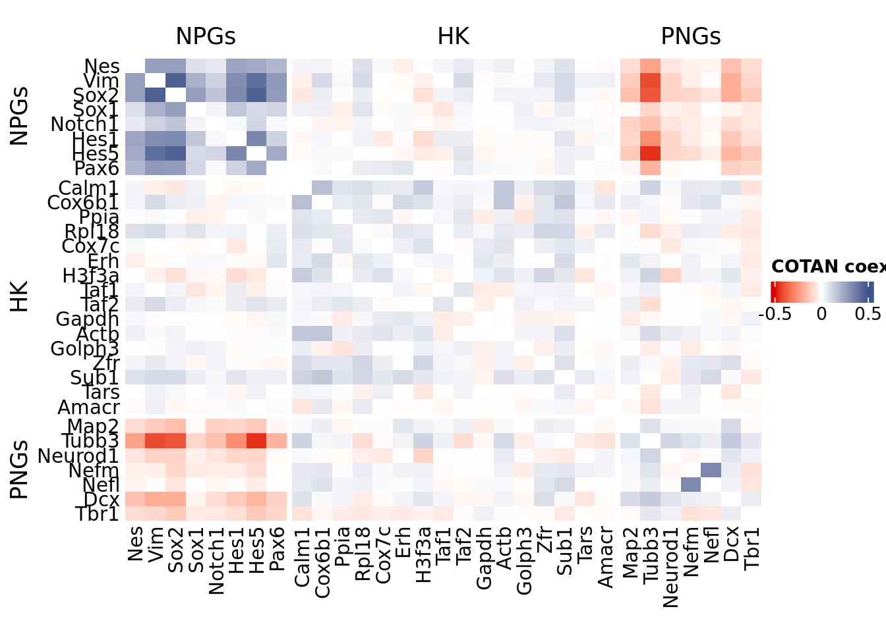
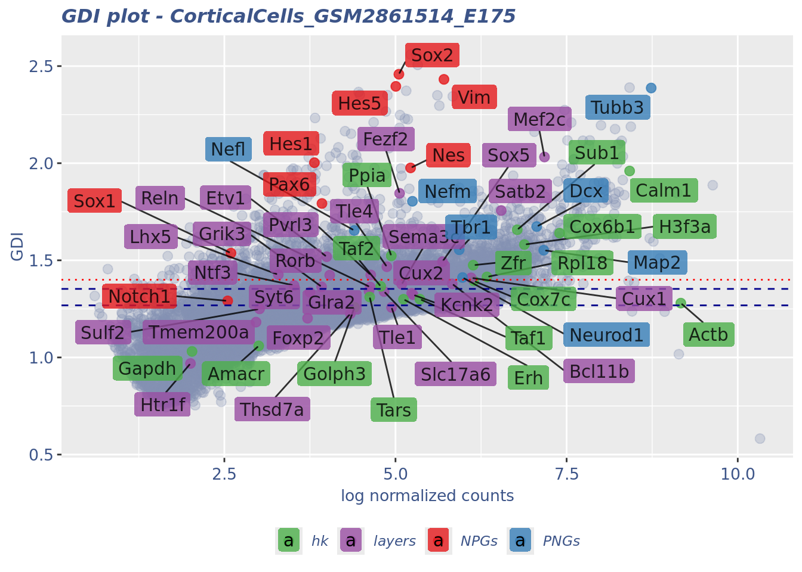

library(COTAN)
library(ComplexHeatmap)
library(circlize)
library(dplyr)
library(Hmisc)
library(Seurat)
library(patchwork)
library(Rfast)
library(parallel)
library(doParallel)
library(HiClimR)
library(stringr)
library(fst)
options(parallelly.fork.enable = TRUE)
dataSetFile <- ("Data/Yuzwa_MouseCortex/CorticalCells_GSM2861514_E175.cotan.RDS")
name <- str_split(dataSetFile,pattern = "/",simplify = T)[3]
name <- str_remove(name,pattern = ".RDS")
project = "E17.5"
setLoggingLevel(1)
outDir <- "CoexData/"
setLoggingFile(paste0(outDir, "Logs/",name,".log"))
obj <- readRDS(dataSetFile)
file_code = getMetadataElement(obj, datasetTags()[["cond"]])Gene Correlation Analysis E17.5
Prologue
source("src/Functions.R")To compare the ability of COTAN to asses the real correlation between genes we define some pools of genes:
- Constitutive genes
- Neural progenitor genes
- Pan neuronal genes
- Some layer marker genes
genesList <- list(
"NPGs"=
c("Nes", "Vim", "Sox2", "Sox1", "Notch1", "Hes1", "Hes5", "Pax6"),
"PNGs"=
c("Map2", "Tubb3", "Neurod1", "Nefm", "Nefl", "Dcx", "Tbr1"),
"hk"=
c("Calm1", "Cox6b1", "Ppia", "Rpl18", "Cox7c", "Erh", "H3f3a",
"Taf1", "Taf2", "Gapdh", "Actb", "Golph3", "Zfr", "Sub1",
"Tars", "Amacr"),
"layers" =
c("Reln","Lhx5","Cux1","Satb2","Tle1","Mef2c","Rorb","Sox5","Bcl11b","Fezf2","Foxp2","Ntf3","Rasgrf2","Pvrl3", "Cux2","Slc17a6", "Sema3c","Thsd7a", "Sulf2", "Kcnk2","Grik3", "Etv1", "Tle4", "Tmem200a", "Glra2", "Etv1","Htr1f", "Sulf1","Rxfp1", "Syt6")
# From https://www.science.org/doi/10.1126/science.aam8999
)COTAN
int.genes <-getGenes(obj)coexMat.big <- getGenesCoex(obj)#[int.genes,int.genes]
coexMat <- getGenesCoex(obj)[c(genesList$NPGs,genesList$hk,genesList$PNGs),c(genesList$NPGs,genesList$hk,genesList$PNGs)]
f1 = colorRamp2(seq(-0.5,0.5, length = 3), c("#DC0000B2", "white","#3C5488B2" ))
split.genes <- factor(c(rep("NPGs",length(genesList[["NPGs"]])),
rep("HK",length(genesList[["hk"]])),
rep("PNGs",length(genesList[["PNGs"]]))
),
levels = c("NPGs","HK","PNGs"))
lgd = Legend(col_fun = f1, title = "COTAN coex")
htmp <- Heatmap(as.matrix(coexMat),
#width = ncol(coexMat)*unit(2.5, "mm"),
height = nrow(coexMat)*unit(3, "mm"),
cluster_rows = FALSE,
cluster_columns = FALSE,
col = f1,
row_names_side = "left",
row_names_gp = gpar(fontsize = 11),
column_names_gp = gpar(fontsize = 11),
column_split = split.genes,
row_split = split.genes,
cluster_row_slices = FALSE,
cluster_column_slices = FALSE,
heatmap_legend_param = list(
title = "COTAN coex", at = c(-0.5, 0, 0.5),direction = "horizontal",
labels = c("-0.5", "0", "0.5")
)
)
draw(htmp, heatmap_legend_side="right")
GDI_DF <- calculateGDI(obj)
GDI_DF$geneType <- NA
for (cat in names(genesList)) {
GDI_DF[rownames(GDI_DF) %in% genesList[[cat]],]$geneType <- cat
}
GDI_DF$GDI_centered <- scale(GDI_DF$GDI,center = T,scale = T)
write.csv(GDI_DF,paste0("CoexData/","Variance_GDI_genes",file_code,".csv"))
GDI_DF[unlist(genesList),] sum.raw.norm GDI exp.cells geneType GDI_centered
Nes 5.220644 1.9759151 13.9588101 NPGs 3.88073248
Vim 5.707954 2.4316257 13.3867277 NPGs 6.38025751
Sox2 5.049686 2.4580921 9.2677346 NPGs 6.52542286
Sox1 2.596456 1.5372902 1.7162471 NPGs 1.47492018
Notch1 2.548442 1.2912127 1.2585812 NPGs 0.12521118
Hes1 3.815307 2.0026215 3.0892449 NPGs 4.02721428
Hes5 5.005001 2.3956230 6.5217391 NPGs 6.18278634
Pax6 3.925807 1.7927127 4.0045767 NPGs 2.87588602
Map2 7.165812 1.5519874 65.3318078 PNGs 1.55553290
Tubb3 8.735578 2.3871787 90.9610984 PNGs 6.13647007
Neurod1 5.979697 1.4115723 20.8237986 PNGs 0.78537104
Nefm 5.247537 1.8040041 11.4416476 PNGs 2.93781860
Nefl 4.397731 1.6537969 5.2631579 PNGs 2.11394740
Dcx 7.063133 1.6738575 63.1578947 PNGs 2.22397771
Tbr1 5.930953 1.5543822 26.6590389 PNGs 1.56866816
Calm1 8.420630 1.9599507 89.4736842 hk 3.79316931
Cox6b1 7.396777 1.6401134 75.9725400 hk 2.03889511
Ppia 4.938416 1.5230935 15.4462243 hk 1.39705306
Rpl18 6.336462 1.4146625 44.1647597 hk 0.80232041
Cox7c 6.144064 1.3937240 39.0160183 hk 0.68747482
Erh 5.116709 1.2996389 17.9633867 hk 0.17142798
H3f3a 6.883043 1.5810893 61.7848970 hk 1.71515374
Taf1 5.356496 1.3000061 16.4759725 hk 0.17344183
Taf2 4.784093 1.3661691 11.5560641 hk 0.53633887
Gapdh 2.027649 1.0309864 0.9153318 hk -1.30210301
Actb 9.168400 1.2795919 98.3981693 hk 0.06147194
Golph3 4.401339 1.2584072 8.6956522 hk -0.05472380
Zfr 6.134988 1.4748224 35.0114416 hk 1.13229093
Sub1 6.778528 1.6575142 56.9794050 hk 2.13433668
Tars 4.622981 1.3112605 10.4118993 hk 0.23517106
Amacr 3.001914 1.0595608 1.7162471 hk -1.14537537
Reln 4.630042 1.3624092 4.1189931 layers 0.51571626
Lhx5 3.288483 1.4261767 1.4874142 layers 0.86547473
Cux1 6.104752 1.4098312 32.6086957 layers 0.77582115
Satb2 6.545260 1.7564615 38.9016018 layers 2.67705206
Tle1 4.942203 1.2576091 12.4713959 layers -0.05910126
Mef2c 7.176654 2.0319404 50.2288330 layers 4.18802527
Rorb 4.038835 1.4237173 5.0343249 layers 0.85198472
Sox5 5.686965 1.4932040 18.0778032 layers 1.23311226
Bcl11b 5.827814 1.3788500 22.6544622 layers 0.60589249
Fezf2 5.060242 1.8449393 10.0686499 layers 3.16234383
Foxp2 3.715673 1.2017254 2.6315789 layers -0.36561756
Ntf3 3.517345 1.3707172 2.5171625 layers 0.56128503
NA NA NA NA <NA> NA
Pvrl3 4.638048 1.4248249 8.6956522 layers 0.85805972
Cux2 5.235976 1.3303178 14.6453089 layers 0.33969841
Slc17a6 4.833627 1.3393122 9.9542334 layers 0.38903165
Sema3c 5.091768 1.3767920 11.8993135 layers 0.59460463
Thsd7a 4.340644 1.2252121 4.9199085 layers -0.23679530
Sulf2 3.014381 1.2499911 1.7162471 layers -0.10088493
Kcnk2 5.256674 1.3228860 19.1075515 layers 0.29893593
Grik3 3.920478 1.3638079 2.8604119 layers 0.52338795
Etv1 3.994692 1.5185054 4.1189931 layers 1.37188765
Tle4 4.873726 1.4669420 8.4668192 layers 1.08906769
Tmem200a 2.962816 1.1818921 2.0594966 layers -0.47440110
Glra2 4.613463 1.3419476 9.7254005 layers 0.40348636
Etv1.1 3.994692 1.5185054 4.1189931 layers 1.37188765
Htr1f 2.004839 0.9689532 0.6864989 layers -1.64234848
NA.1 NA NA NA <NA> NA
NA.2 NA NA NA <NA> NA
Syt6 3.750383 1.3359728 3.6613272 layers 0.37071545GDIPlot(obj,GDIIn = GDI_DF, genes = genesList,GDIThreshold = 1.4)
Seurat correlation
srat<- CreateSeuratObject(counts = getRawData(obj),
project = project,
min.cells = 3,
min.features = 200)
srat[["percent.mt"]] <- PercentageFeatureSet(srat, pattern = "^mt-")
srat <- NormalizeData(srat)
srat <- FindVariableFeatures(srat, selection.method = "vst", nfeatures = 2000)
# plot variable features with and without labels
plot1 <- VariableFeaturePlot(srat)
plot1$data$centered_variance <- scale(plot1$data$variance.standardized,
center = T,scale = F)
write.csv(plot1$data,paste0("CoexData/",
"Variance_Seurat_genes",
getMetadataElement(obj,
datasetTags()[["cond"]]),".csv"))
LabelPoints(plot = plot1, points = c(genesList$NPGs,genesList$PNGs,genesList$layers), repel = TRUE)LabelPoints(plot = plot1, points = c(genesList$hk), repel = TRUE)
all.genes <- rownames(srat)
srat <- ScaleData(srat, features = all.genes)
seurat.data = GetAssayData(srat[["RNA"]],layer = "data")corr.pval.list <- correlation_pvalues(data = seurat.data,
int.genes,
n.cells = getNumCells(obj))
seurat.data.cor.big <- as.matrix(Matrix::forceSymmetric(corr.pval.list$data.cor, uplo = "U"))
htmp <- correlation_plot(seurat.data.cor.big,
genesList, title="Seurat corr")
p_values.fromSeurat <- corr.pval.list$p_values
seurat.data.cor.big <- corr.pval.list$data.cor
rm(corr.pval.list)
gc() used (Mb) gc trigger (Mb) max used (Mb)
Ncells 7108398 379.7 11454412 611.8 11454412 611.8
Vcells 564771015 4308.9 902333175 6884.3 902333175 6884.3draw(htmp, heatmap_legend_side="right")
Seurat SC Transform
srat <- SCTransform(srat,
method = "glmGamPoi",
vars.to.regress = "percent.mt",
verbose = FALSE)
seurat.data <- GetAssayData(srat[["SCT"]],layer = "data")
#Remove genes with all zeros
seurat.data <-seurat.data[rowSums(seurat.data) > 0,]
corr.pval.list <- correlation_pvalues(seurat.data,
int.genes,
n.cells = getNumCells(obj))
seurat.data.cor.big <- as.matrix(Matrix::forceSymmetric(corr.pval.list$data.cor, uplo = "U"))
htmp <- correlation_plot(seurat.data.cor.big,
genesList, title="Seurat corr SCT")
p_values.fromSeurat <- corr.pval.list$p_values
seurat.data.cor.big <- corr.pval.list$data.cor
rm(corr.pval.list)
gc() used (Mb) gc trigger (Mb) max used (Mb)
Ncells 8837356 472.0 16666662 890.1 13556438 724.0
Vcells 485068772 3700.8 1039644617 7931.9 1082876197 8261.7draw(htmp, heatmap_legend_side="right")Monocle
library(monocle3)cds <- new_cell_data_set(getRawData(obj),
cell_metadata = getMetadataCells(obj),
gene_metadata = getMetadataGenes(obj)
)
cds <- preprocess_cds(cds, num_dim = 100)
normalized_counts <- normalized_counts(cds)#Remove genes with all zeros
normalized_counts <- normalized_counts[rowSums(normalized_counts) > 0,]
corr.pval.list <- correlation_pvalues(normalized_counts,
int.genes,
n.cells = getNumCells(obj))
rm(normalized_counts)
monocle.data.cor.big <- as.matrix(Matrix::forceSymmetric(corr.pval.list$data.cor, uplo = "U"))
htmp <- correlation_plot(data.cor.big = monocle.data.cor.big,
genesList,
title = "Monocle corr")
p_values.from.monocle <- corr.pval.list$p_values
monocle.data.cor.big <- corr.pval.list$data.cor
rm(corr.pval.list)
gc() used (Mb) gc trigger (Mb) max used (Mb)
Ncells 9949073 531.4 16666662 890.1 16666662 890.1
Vcells 577016889 4402.3 1197846598 9138.9 1170159130 8927.7draw(htmp, heatmap_legend_side="right")ScanPy
library(reticulate)
dirOutScP <- paste0("CoexData/ScanPy/")
if (!dir.exists(dirOutScP)) {
dir.create(dirOutScP)
}
Sys.setenv(RETICULATE_PYTHON = "../../../bin/python3")
py <- import("sys")
source_python("src/scanpyGenesExpression.py")
scanpyFDR(getRawData(obj),
getMetadataCells(obj),
getMetadataGenes(obj),
"mt",
dirOutScP,
file_code,
int.genes)
normalized_counts <- read.csv(paste0(dirOutScP,
file_code,"_Scampy_expression_all_genes.gz"),header = T,row.names = 1)
normalized_counts <- t(normalized_counts)#Remove genes with all zeros
normalized_counts <-normalized_counts[rowSums(normalized_counts) > 0,]
corr.pval.list <- correlation_pvalues(normalized_counts,
int.genes,
n.cells = getNumCells(obj))
ScanPy.data.cor.big <- as.matrix(Matrix::forceSymmetric(corr.pval.list$data.cor, uplo = "U"))
htmp <- correlation_plot(data.cor.big = ScanPy.data.cor.big,
genesList,
title = "ScanPy corr")
p_values.from.ScanPy <- corr.pval.list$p_values
ScanPy.data.cor.big <- corr.pval.list$data.cor
rm(corr.pval.list)
gc() used (Mb) gc trigger (Mb) max used (Mb)
Ncells 9972882 532.7 16666662 890.1 16666662 890.1
Vcells 549865083 4195.2 1197846598 9138.9 1197843725 9138.9draw(htmp, heatmap_legend_side="right")Sys.time()[1] "2024-05-06 12:30:26 CEST"sessionInfo()R version 4.3.2 (2023-10-31)
Platform: x86_64-pc-linux-gnu (64-bit)
Running under: Ubuntu 20.04.6 LTS
Matrix products: default
BLAS: /usr/lib/x86_64-linux-gnu/openblas-pthread/libblas.so.3
LAPACK: /usr/lib/x86_64-linux-gnu/openblas-pthread/liblapack.so.3; LAPACK version 3.9.0
locale:
[1] C.UTF-8
time zone: Europe/Rome
tzcode source: system (glibc)
attached base packages:
[1] stats4 parallel grid stats graphics grDevices utils
[8] datasets methods base
other attached packages:
[1] reticulate_1.36.1 monocle3_1.3.4
[3] SingleCellExperiment_1.22.0 SummarizedExperiment_1.30.2
[5] GenomicRanges_1.52.0 GenomeInfoDb_1.36.1
[7] IRanges_2.34.1 S4Vectors_0.38.1
[9] MatrixGenerics_1.12.3 matrixStats_1.2.0
[11] Biobase_2.60.0 BiocGenerics_0.46.0
[13] fstcore_0.9.18 fst_0.9.8
[15] stringr_1.5.0 HiClimR_2.2.1
[17] doParallel_1.0.17 iterators_1.0.14
[19] foreach_1.5.2 Rfast_2.1.0
[21] RcppParallel_5.1.7 RcppZiggurat_0.1.6
[23] Rcpp_1.0.11 patchwork_1.2.0
[25] Seurat_5.0.0 SeuratObject_5.0.0
[27] sp_2.1-1 Hmisc_5.1-0
[29] dplyr_1.1.2 circlize_0.4.15
[31] ComplexHeatmap_2.16.0 COTAN_2.5.0
loaded via a namespace (and not attached):
[1] RcppAnnoy_0.0.21 splines_4.3.2
[3] later_1.3.1 bitops_1.0-7
[5] tibble_3.2.1 polyclip_1.10-4
[7] rpart_4.1.23 fastDummies_1.7.3
[9] lifecycle_1.0.3 globals_0.16.2
[11] lattice_0.22-5 MASS_7.3-60
[13] backports_1.4.1 dendextend_1.17.1
[15] magrittr_2.0.3 plotly_4.10.2
[17] rmarkdown_2.24 yaml_2.3.7
[19] httpuv_1.6.11 glmGamPoi_1.12.2
[21] sctransform_0.4.1 spam_2.10-0
[23] askpass_1.2.0 spatstat.sparse_3.0-2
[25] minqa_1.2.5 cowplot_1.1.1
[27] pbapply_1.7-2 RColorBrewer_1.1-3
[29] zlibbioc_1.46.0 abind_1.4-5
[31] Rtsne_0.17 purrr_1.0.1
[33] RCurl_1.98-1.12 nnet_7.3-19
[35] GenomeInfoDbData_1.2.10 ggrepel_0.9.5
[37] irlba_2.3.5.1 listenv_0.9.0
[39] spatstat.utils_3.0-3 terra_1.7-39
[41] umap_0.2.10.0 goftest_1.2-3
[43] RSpectra_0.16-1 spatstat.random_3.2-1
[45] dqrng_0.3.0 fitdistrplus_1.1-11
[47] parallelly_1.37.1 DelayedMatrixStats_1.22.5
[49] ncdf4_1.22 leiden_0.4.3
[51] codetools_0.2-19 DelayedArray_0.26.7
[53] tidyselect_1.2.0 shape_1.4.6
[55] farver_2.1.1 lme4_1.1-34
[57] ScaledMatrix_1.8.1 viridis_0.6.4
[59] base64enc_0.1-3 spatstat.explore_3.2-1
[61] jsonlite_1.8.7 GetoptLong_1.0.5
[63] ellipsis_0.3.2 progressr_0.14.0
[65] Formula_1.2-5 ggridges_0.5.4
[67] survival_3.5-8 tools_4.3.2
[69] ica_1.0-3 glue_1.7.0
[71] gridExtra_2.3 xfun_0.39
[73] ggthemes_5.1.0 withr_3.0.0
[75] fastmap_1.1.1 boot_1.3-28
[77] fansi_1.0.4 openssl_2.1.0
[79] digest_0.6.33 rsvd_1.0.5
[81] parallelDist_0.2.6 R6_2.5.1
[83] mime_0.12 colorspace_2.1-0
[85] Cairo_1.6-1 scattermore_1.2
[87] tensor_1.5 spatstat.data_3.0-1
[89] utf8_1.2.3 tidyr_1.3.0
[91] generics_0.1.3 data.table_1.15.0
[93] httr_1.4.6 htmlwidgets_1.6.2
[95] S4Arrays_1.2.0 uwot_0.1.16
[97] pkgconfig_2.0.3 gtable_0.3.3
[99] lmtest_0.9-40 XVector_0.40.0
[101] htmltools_0.5.8 dotCall64_1.1-0
[103] clue_0.3-64 scales_1.3.0
[105] png_0.1-8 knitr_1.43
[107] rstudioapi_0.15.0 reshape2_1.4.4
[109] rjson_0.2.21 nloptr_2.0.3
[111] checkmate_2.3.0 nlme_3.1-163
[113] zoo_1.8-12 GlobalOptions_0.1.2
[115] KernSmooth_2.23-22 miniUI_0.1.1.1
[117] foreign_0.8-86 pillar_1.9.0
[119] vctrs_0.6.3 RANN_2.6.1
[121] promises_1.2.0.1 BiocSingular_1.16.0
[123] beachmat_2.16.0 xtable_1.8-4
[125] cluster_2.1.6 htmlTable_2.4.1
[127] evaluate_0.21 zeallot_0.1.0
[129] cli_3.6.1 compiler_4.3.2
[131] rlang_1.1.1 crayon_1.5.2
[133] future.apply_1.11.0 labeling_0.4.2
[135] plyr_1.8.8 stringi_1.8.1
[137] viridisLite_0.4.2 deldir_2.0-2
[139] BiocParallel_1.34.2 assertthat_0.2.1
[141] munsell_0.5.0 lazyeval_0.2.2
[143] spatstat.geom_3.2-4 PCAtools_2.14.0
[145] Matrix_1.6-3 RcppHNSW_0.6.0
[147] sparseMatrixStats_1.12.2 future_1.33.0
[149] ggplot2_3.5.0 shiny_1.8.0
[151] ROCR_1.0-11 igraph_2.0.3